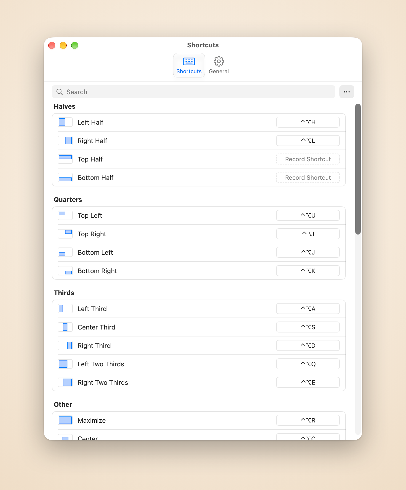

Coloca las ventanas que de verdad usas
Piccolo recuerda qué ventanas usaste por última vez. Un atajo coloca las dos, tres o seis más recientes una al lado de otra o en cuadrícula en la pantalla actual, sin elegirlas una a una.
Piccolo coloca las ventanas que acabas de usar y mantiene tu escritorio en orden, todo desde el teclado.
Gratis durante 14 días, sin tarjeta de crédito
Comprar por 4,99 US$
Piccolo recuerda qué ventanas usaste por última vez. Un atajo coloca las dos, tres o seis más recientes una al lado de otra o en cuadrícula en la pantalla actual, sin elegirlas una a una.
Cuando Piccolo ha colocado un grupo, un atajo mueve el divisor junto a la ventana activa y las vecinas lo siguen, sin huecos ni solapamientos. Intercambiar ventana cambia dos ventanas de sitio y la disposición se mantiene.
Mantén pulsado un atajo y un resaltado muestra el destino. Suelta para mover la ventana allí, o pulsa Esc y no cambia nada.
Pulsa otra vez para 2/3, luego 1/3
⌃⌥H ⌃⌥L
Una tecla para cada esquina
⌃⌥U ⌃⌥I ⌃⌥J ⌃⌥K
Tres columnas en pantallas anchas
⌃⌥A ⌃⌥S ⌃⌥D
Espacio para la ventana principal
⌃⌥Q ⌃⌥E
Ocupa toda la pantalla
⌃⌥R
Mismo tamaño, justo en el centro
⌃⌥C
Mismo tamaño y sitio relativos
⌃⌥[ ⌃⌥] ⌃⌥⌘ + flechas
Dibuja las tuyas en la pantalla
⌃⌥W
Vuelve a donde estaba antes
⌃⌥⌫
Haz clic en una acción en Ajustes y pulsa las teclas que quieras. Las cuadrículas y las áreas personalizadas también tienen sus atajos, y los usuarios avanzados pueden editar el archivo de configuración a mano.

Todas las acciones en una sola lista. Haz clic en una fila, pulsa las teclas y queda guardado. ⌘Z deshace cualquier cambio.
Las ventanas se deslizan a su sitio y rebotan suavemente cuando no tienen adónde ir. Elige la velocidad o desactívalas.
Cuando las ventanas no llenan la cuadrícula, elige si la última se estira hacia abajo o a lo ancho: columnas primero para una pantalla ancha, filas primero para una vertical.
Deja un margen entre las ventanas y en los bordes, para que las sombras no se acumulen en franjas oscuras.
English, 简体中文, 繁體中文, 日本語, Français, Español, Português y Deutsch.
Sin cuenta, sin analíticas. Solo la comprobación de la licencia y de actualizaciones se conectan a internet.
Precio de lanzamiento
US$4.99 pago único · 9,99 US$ tras el lanzamiento
Los pedidos los procesa Dodo Payments, el vendedor registrado, que se encarga del pago, los impuestos y las facturas.
macOS 14 o posterior y el permiso de Accesibilidad: Piccolo mueve las ventanas de otras apps mediante la API de Accesibilidad de macOS, y sin él no se mueve ninguna ventana.
Piccolo mueve y redimensiona las ventanas de otras apps mediante la API de Accesibilidad de macOS, y sin el permiso no se mueve ninguna ventana. Solo lo usa para leer y cambiar la posición y el tamaño de las ventanas. Se concede en Ajustes del Sistema, Privacidad y seguridad, Accesibilidad.
Nada más sale de tu Mac: sin analíticas ni informes de fallos. Tus ventanas, atajos y archivo de configuración se quedan en local. Consulta la política de privacidad (en inglés).
Una licencia cubre 3 Mac.
En el Mac que quieres liberar, abre Ajustes, ve a General y elige «Desactivar en este Mac». Después activa la licencia en el otro Mac.
Puedes pedir un reembolso en los 30 días siguientes a la compra, sin dar explicaciones. Escribe a support@damao.io con tu número de pedido. Consulta la política de reembolsos (en inglés).